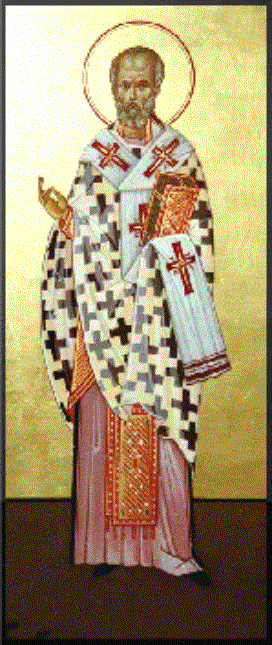

The Legend of the Jew and the Icon of St. Nicholas
According to the version of the play in Fleury:
“A Jew, having stolen an icon of St. Nicholas and having heard of the great reputation of the Saint, goes off on a journey, leaving his house unlocked with only the icon to guard it from robbers. Three burglars immediately appear, and somewhat puzzled by the ease of their task, make off with a large amount of gold, silver and precious raiment, leaving only the image of the Saint in the house.
“The Jew, returning, breaks into furious imprecations and threatens to beat the treacherous guardian of his treasure, but feels too exhausted from his journey and his sudden misfortune to carry out his intentions at once. Nevertheless, he promises to administer the beating on the morrow and consign the image to the flames, unless the loss is made good.
“Nicholas, wishing to spare his image this indignity,
appears while the thieves are dividing their loot, upbraids them and threatens
to denounce them to the townspeople and have them punished unless they make
immediate restitution to the Jew. Regretfully, they decide the follow the Saint’s
counsel, rather than risk the chance of being hanged. The Jew, his faith in
Nicholas restored by the sight of his wealth restored, invites his friends to
abjure their ‘idols’ and unite with him in honoring this famulum Dei.”
According to The Golden Legend:
“There was a Jew that saw the virtuous miracles of
S. Nicholas, and did do make an image of the saint, and set it in is house, and
commanded him that he should keep well his house when he went out, and that he
should keep well all his goods, saying to him: ‘Nicholas, lo! here be all my
goods, I charge thee to keep them, and if thou keep them not well, I shall
avenge me on thee in beating and tormenting thee.’
“And on a time, when the Jew was out, thieves came
and robbed all his good goods, and left unborne away only the image. And when
the Jew came home he found him robbed of all his goods. He areasoned the image,
saying these words: '‘Sir Nicholas, I had set you in my house for to keep my
goods from thieves, wherefore have ye not kept them? Ye shall receive sorrow
and torments, and shall have pain for the thieves. I shall avenge my loss and
refrain my woodness in beating thee.’
“And then took the Jew the image, and beat it, and
tormented it cruelly. Then happed a great marvel, for when the thieves departed
the goods, the holy saint, like as he had been in his array, appeared to the
thieves, and said to them: ‘Wherefore have I been beaten so cruelly for you and
have so many torments? See how my body is hewed and broken; see how the red
blood runneth down by my body; go ye fast and restore it again, or else the ire
of God Almighty shall make you as to be one out of his wit, and that all men
shall know your felony, and that each of you shall be hanged.’ And they said:
‘Who art thou that sayest to us such things?’ And he said to them: ‘I am
Nicholas the servant of Jesu Christ, whom the Jew hath so cruelly beaten for
his goods that ye bare away.’
“Then they were afeard, and came to the Jew, and
heard what he had done to the image, and they told him the miracle, and
delivered to him again all his goods. And thus came the thieves to the way of
truth, and the Jew to the way of Jesu Christ.” (Jacobus de Voragine, “The Golden Legend: Lives of the Saints,”
translated by William Caxton, pp. 70-71)
Thought to Ponder:
Thought to Discuss around the Dinner Table:
The Legend of the Jew and the Icon of St. Nicholas
